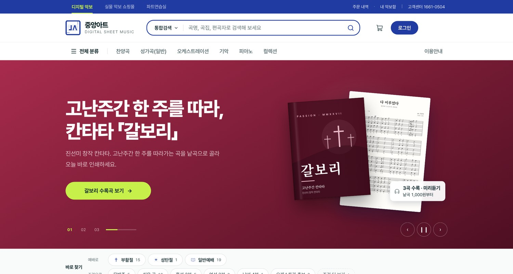
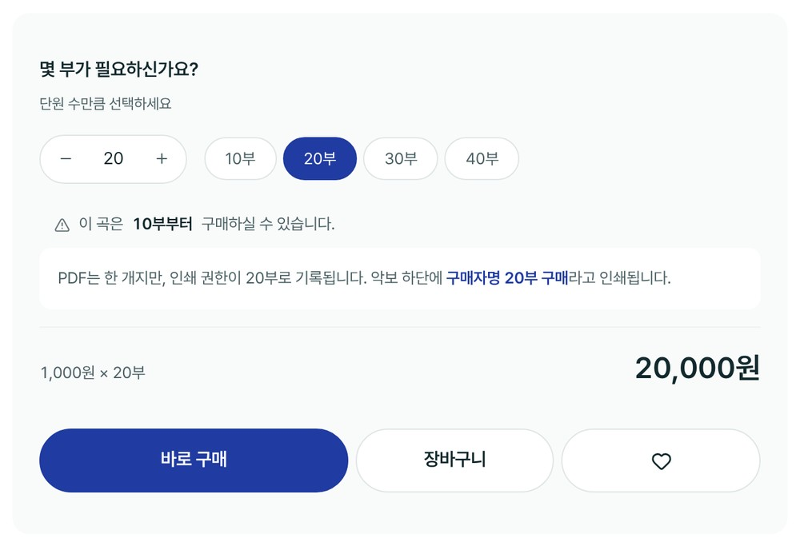

약 10분
대표님, 시안을
직접 써 보세요
지휘자가 되어 곡을 사 보고, 중앙아트 담당자가 되어 악보를 올려 봅니다.
다섯 단계를 순서대로 따라 하시면 됩니다.
🔔 시안이라 결제는 실제로 되지 않습니다. 로그인과 결제는 ‘자동 입력’으로 흉내만 냅니다. 마음껏 눌러 보셔도 됩니다.
끝내시면 이걸 해 보신 겁니다곡 고르기 → 음역 확인 → 20부 구매 → 세 곡을 한 파일로 → 악보 올리기 → 저작권료 확인
sheet.joongangart.co.kr

고객 화면 써 보기
부활절을 앞둔 성가대 지휘자라고 생각하고 따라 해 보세요.
1부활절 곡 찾기
- 고객 사이트 열기 ↗
- 홈 가운데 ‘이번 절기 준비’를 보세요 — 부활절까지 남은 날짜와 중앙아트가 고른 곡이 순서대로 나옵니다
- 배너 아래 ‘바로 찾기’에서 부활절을 눌러 보세요

이렇게 되면 성공부활절 곡만 모인 목록이 뜹니다. 카드에 마우스를 올리면 ‘악보 · 듣기’가 바로 나옵니다.
2곡을 확인하고 사 보기
- 목록에서 ‘다 이루었다’를 누르세요
- 정보 칸 아래 음역과 성경 본문을 보세요 — 소프라노 최고음 B5가 붉게 표시됩니다
- 20부를 고르면 금액과 “인쇄 권한이 20부로 기록됩니다”가 함께 나옵니다. 이 곡은 10부부터라는 안내도 보입니다
- 바로 구매 → 로그인 창에서 ‘자동 입력’ → 동의 → 결제까지 진행해 보세요


💡 왜 음역이 있나요? 지휘자가 곡을 고를 때 가장 먼저 보는 것이 “우리 성가대가 부를 수 있나”입니다. 사 놓고 높아서 못 부르는 일이 줄어듭니다.
이렇게 되면 성공주문 완료 화면이 뜨고, 바로 악보를 받을 수 있습니다.
3여러 곡을 한 파일로 받기
- 머리의 ‘내 악보함’으로 가세요 — 시안에는 미리 산 곡 몇 개가 들어 있습니다
- 곡 세 개를 체크하고 ‘묶어서 내려받기’를 누르세요
- 창에서 곡 순서와 면수를 확인하고 바로 인쇄를 눌러 보세요 — 인쇄 창에서 미리보기로 확인됩니다


이렇게 되면 성공맨 앞에 곡 목록 한 장, 이어서 세 곡이 순서대로. 면마다 아래에 구매자 · 부수가 찍혀 있습니다.
관리자 화면 써 보기
대표님이나 직원이 실제로 쓰실 화면입니다. 로그인 화면의 ‘시험 계정’을 누르면 바로 들어갑니다.
4악보 한 곡 올려 보기
- 관리자 열기 ↗ → 시험 계정 → 로그인
- 왼쪽 악보 관리 → 오른쪽 위 ＋ 악보 등록
- 파일 선택을 눌러 가지고 계신 악보 PDF를 아무거나 올려 보세요 — 그 자리에서 파일을 검사하고 1면을 보여 줍니다
- 아래 ‘악보에서 읽은 음역’을 보고 맞습니다를 눌러 보세요

💡 필수는 세 칸뿐입니다 — PDF · 곡명 · 판매가. 곡명은 파일 이름에서 채워 둡니다. 나머지는 나중에 채워도 판매됩니다.
이렇게 되면 성공맨 위 띠가 초록으로 바뀌고 “판매 시작”이 눌립니다. 오른쪽 고객 미리보기에 올린 악보 1면이 보입니다.
5이번 달 저작권료 확인하기
- 왼쪽 저작권료 정산을 누르세요
- 권리자별 지급액과 곡별 내역을 보세요 — 발급 기록으로 자동 계산된 값입니다
- 엑셀 내려받기와 지급 명세서 만들기를 눌러 보세요 — 파일 속 구매자 이름은 가려서(김*윤) 나갑니다

이렇게 되면 성공엑셀 파일과, 권리자 한 분당 A4 한 장짜리 지급명세서가 내려받아집니다. 매달 ERP에 옮겨 적던 일이 이 두 번의 클릭으로 바뀝니다.
말씀 주실 것
써 보시고 불편했던 곳, 이름이 어색한 메뉴, 더 있었으면 하는 것을 알려 주세요. 아래 세 가지는 개발 전에 꼭 여쭤볼 것입니다.
- 파트연습실 곡 번호가 곡집 수록 순서와 같은지
- 사보 원본 파일(Finale · Sibelius)이 있는지 — 음역 정확도
- 저작권료 기준일과 전화 · 카톡 주문을 어디에 기록하시는지
중앙아트 디지털 악보몰 · 기획 시안 2026.11